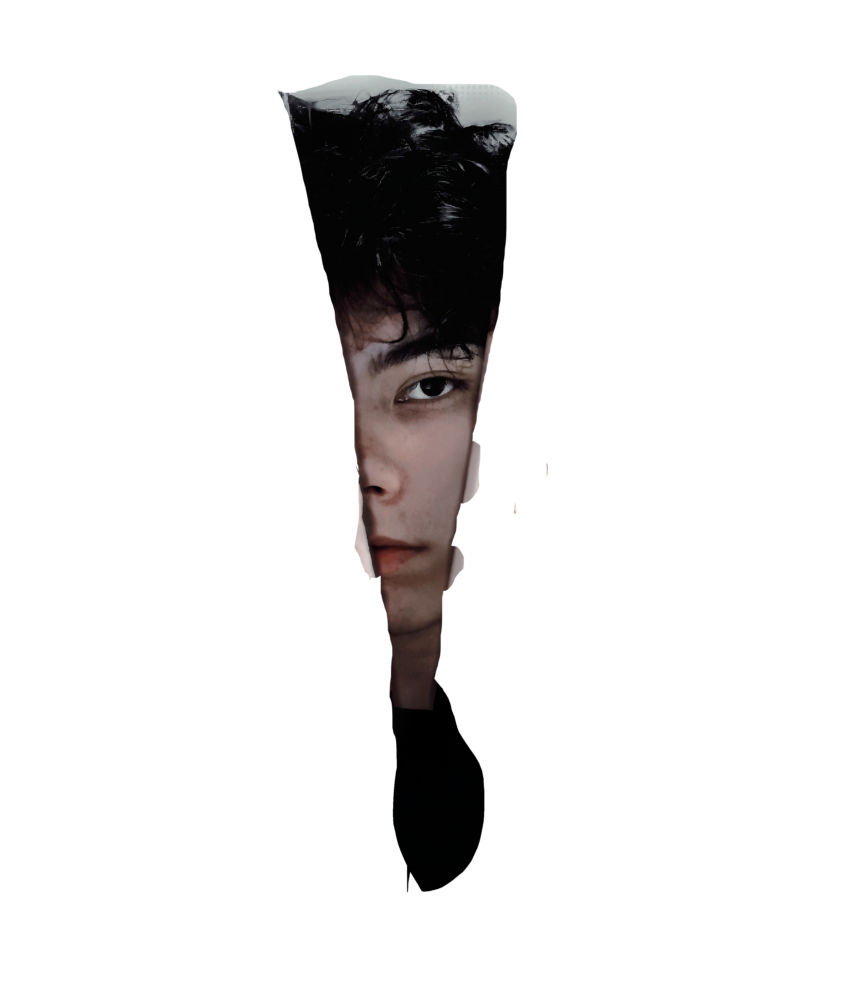
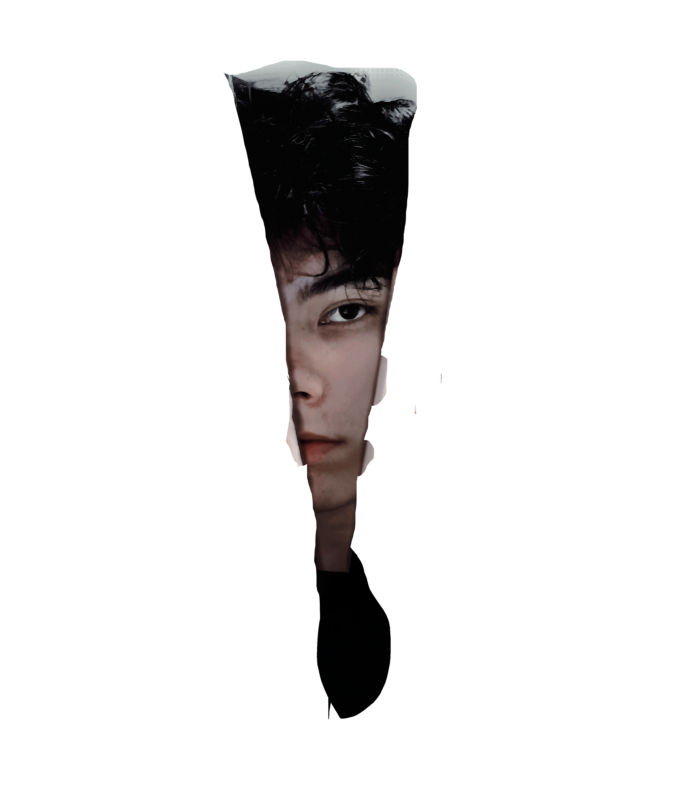

Soy Jhon Alexander Fonseca Martínez, un apasionado productor multimedia con una visión única para transformar cada imagen en una historia. Mi camino comenzó hace dos años, motivado por el poder de la fotografía y la edición para reinventar la realidad. Cada fotografía es para mí un lienzo en el que plasmar mi creatividad, explorando desde reinterpretaciones inspiradas en el manga hasta técnicas avanzadas de edición. A lo largo de mi formación y experiencia, he tenido el privilegio de trabajar en proyectos que me han permitido crecer tanto técnica como creativamente, destacando mi participación en concursos y colaboraciones en animación 3D. Mi proceso creativo se basa en entender los límites y posibilidades de cada proyecto, idear soluciones innovadoras y trabajar en equipo para llevar a cabo producciones audiovisuales impactantes. Con una sólida base en herramientas como Adobe Suite, Blender y aplicaciones de inteligencia artificial, me comprometo a seguir aprendiendo y superándome, apuntando a perfeccionar cada detalle, desde la producción hasta la postproducción. Mi objetivo es continuar transformando ideas en realidades visuales, aportando creatividad y profesionalismo en cada proyecto que emprendo.
Adobe Illustrator
Adobe Premiere
Adobe Lightroom
Adobe Photoshop
Blender

Ganador del concurso regional en Bogotá, destacando la belleza en la diversidad.
Ver Fotos
Colaboración en un proyecto de animación 3D, trabajando en texturizado, iluminación y efectos visuales.
Ver VideosGanador del concurso Fotografiándome (Senarte 2024)
Participación en el Festival Cultural Nacional de Aprendices 2024